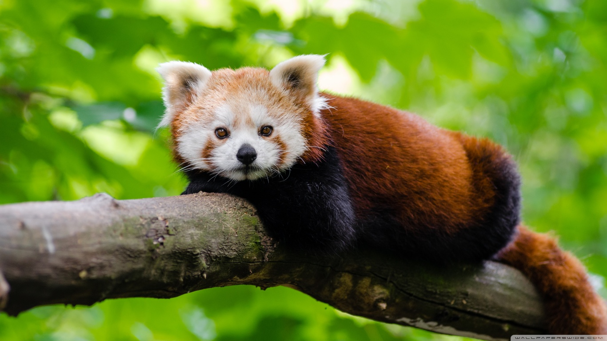
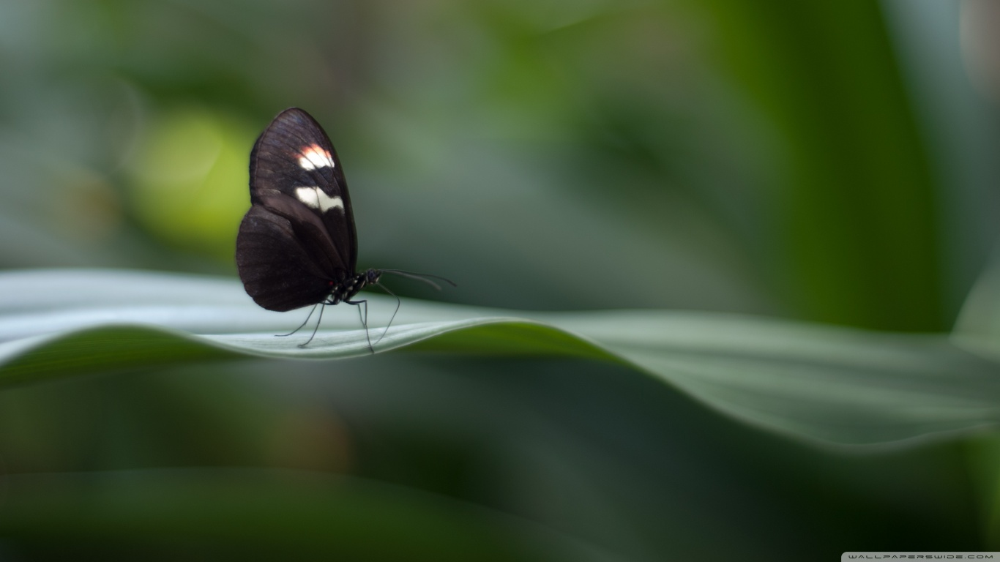
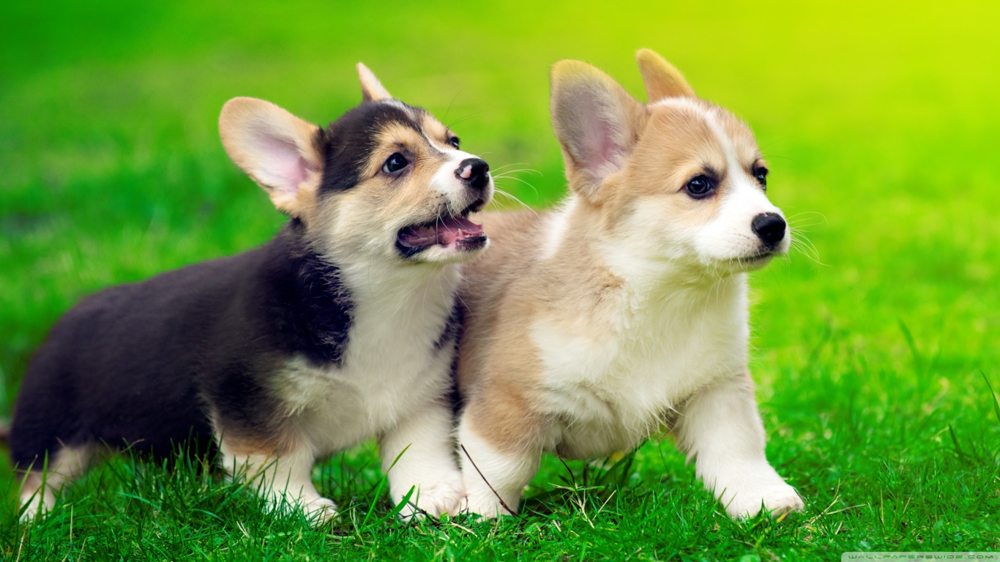
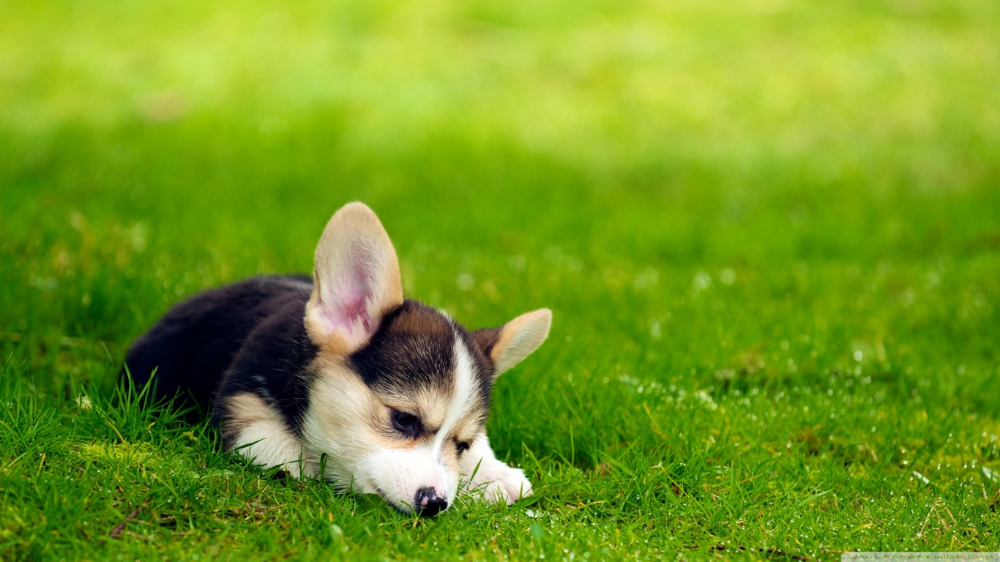

<!DOCTYPE html>
<html lang="en">
<head>
	<title>Animal Information</title>
		<meta charset="utf-8">
		<meta name="veiwport" content="width=device-width,initial-state=1">
		<meta name="Animals" content="Information of animals related their food and their related activites">
		<meta name="reptitles" content="their inforamtion about what they eat and what activites they do">
		
		<link rel="stylesheet" type="text/css" href="css/bootstrap.min.css">
		<script type="text/javascript" src="js/jquery.js"></script>
		<script type="text/javascript" src="js/bootstrap.min.js"></script>
		<link rel="stylesheet" type="text/css" href="styles.css">
		<script type="text/javascript"  src="java.js" ></script>
</head>
<body data-spy="scroll" data-target=".navbar-default" data-offset="70">
		<!--Navbar containter-fluid-->
		<nav class="nav navbar-default navbar-fixed-top">
		<div class="container-fluid">
			<!--navbar heading inside button-->

			<div class="navbar-header ">
			
			<a href="#" class="navbar-brand"><b>Animals Life</b></a><button type="button" class="navbar-toggle collapsed" data-toggle="collapse" data-target="#connect" aria-expanded="false">
			<span class="sr-only">Toggle navigation</span>
			<span class="icon-bar"></span>
			<span class="icon-bar"></span>
			<span class="icon-bar"></span></button></div>


			
			<!--Navbar UL data -->
			
			<div class="collapse navbar-collapse" id="connect">
			<ul class="nav navbar-nav navbar-tabs">
				<li><a href="#mis">Mission</a> </li>
				<li><a href="#jumb">Details</a></li>
				<li><a href="#vid">videos</a></li>
				<li class="dropdown"><a href="#" class="data-toggle" data-toggle="dropdown">About Us<span class="caret"></span></a>
				<ul class="dropdown-menu" id="color">
					
					<li><a href="#">Seemab khan</a></li>
					<li><a href="#">Age:22</a></li>
					<li><a href="#">Degree:CSS</a></li>
					<li><a href="#">From:Wah Pakistan</a></li>
					<li><a href="#">Language:English</a></li>
					<li><a href="#about">See More</a></li>
				</ul>
				</li>
			</ul>
			<ul class="nav navbar-nav navbar-right">
				<li><a href="#">@Seemabafridi <i class=" glyphicon glyphicon-education"></i></a></li>
			</ul>
			</div>	

			
		</div>
		</nav>
		<!--Class well in this section-->
		
			<!--<div class="well well-sm">
<p class="text-info text-responsive">We offer specialized care for reptiles, rodents, birds, and other exotic pets.</p>
</div>-->
<div class="container-fluid">
	<section class="row " id="mis">
		<div class="col-md-12">
	<div class="carousel slide" data-ride="carousel" id="featured">
	<ol class="carousel-indicators">
		<li data-target="#featured" data-slide-to="0" class="active"></li>
		<li data-target="#featured" data-slide-to="1"></li>
		<li data-target="#featured" data-slide-to="2"></li>
		<li data-target="#featured" data-slide-to="3"></li>
	</ol>
		<div class="carousel-inner" style="height: 600px;">

			<div class="item active"></div>
			<div class="item"></div>
			<div class="item"></div>
			<div class="item"></div>


			
		</div><!--inner carousel-->


			<!--Gly icon are putt in this section-->
			<a href="#featured" class="left carousel-control" roll="button" data-slide="prev">
				<span class="glyphicon glyphicon-chevron-left"></span>
			</a>
			<a href="#featured" class="right carousel-control" roll="button" data-slide="next">
				<span class="glyphicon glyphicon-chevron-right"></span>
			</a>
	</div><!--outer carousel-->
	</div><!--column div-->
	</section>
	</div>
	<div class="container">
	
	<div class="row" style="padding-top: 10px;" id="mis">
		<div class="col-xs-12">
		<!--1st media-->
			<div class="media">
			<div class="media-left">
				<a href="#"></a>
			</div>
			<div class="media-body">
				<h3 class="media-heading">Aldabra Giant Tortoise</h3>
				<p>One got to be 255 years old!</p>
				</div>
			</div>
			<!--2nd media-->
			<div class="media">
			<div class="media-left">
				<a href="#"></a>
			</div>
			
			<div class="media-body">
				<h3 class="media-heading">Finnish Spitz</h3>
				<p>Likes to bark a lot!</p>
				</div>
				
			</div>
			<!--3rd media-->
			<div class="media">
			<div class="media-left">
				<a href="#"></a>
			</div>
			<div class="media-body">
				<h3 class="media-heading">Marine Toad</h3>
				<p>Produces a toxin used in arrow darts!</p>
				</div>
			</div><!--media class is end of 3rd media-->
		</div><!--col div-->
	</div><!--row div-->

	<!--blockqoutes area beging-->
	<div class="row" style="padding-top: 20px;" id="mis">
		<div class="col-md-6" style="text-align: justify;">
			<blockquote><p>Welcome to WikiProject Animals in media. Several Wikipedians have formed this collaboration resource and group dedicated to improving Wikipedia's coverage of Animals in media and the organization of information and articles on this topic. This page and its subpages contain their suggestions and various resources; it is hoped that this project will help to focus the efforts of other Wikipedians interested in the topic.<button type="button" class="btn btn-success" data-toggle="modal" data-target="#more">  See More!!!</button></p><footer>Seemab khan afridi</footer></blockquote>

			<!--Create a modal start-->
			<div class="modal" id="more" tabindex="0" aria-labelledby="modallabel">
				<div class="modal-dailog" role="document">
					<div class="modal-content">
					<div class="modal-header">
						<h1 class="modal-title">WikiProject</h1>
						<button type="button" class="close" data-dismiss="modal" aria-label="close"><span>&times;</span></button>
					</div>
						<div class="modal-body">
							<p>Welcome to WikiProject Animals in media. Several Wikipedians have formed this collaboration resource and group dedicated to improving Wikipedia's coverage of Animals in media and the organization of information and articles on this topic. This page and its subpages contain their suggestions and various resources; it is hoped that this project will help to focus the efforts of other Wikipedians interested in the topic.</p>
						</div>
						<div class="modal-footer">
							<button type="button" role="Close" data-dismiss="modal" class="btn btn-primary close">close</button>
						</div>
					</div>
				</div>
			</div>
		</div>
		<div class="col-md-6"><blockquote><p> A note about our inclusion: an animal does not have to be anthropomorphic to be included. It can be parahuman like Daughter of Smoke and Bone (some characters have animal and human attributes), fully anthropomorphic like Kaze, Ghost Warrior (Kaze and the others walk on their hind legs, talk, wear clothes, and handle tools like people, but retain their animal shape), somewhat anthropomorphic like Warriors (novel series) (the cats talk and have a complex hierarchy, but don't act like humans or understand them), minorly anthropomorphic like The Call of the Wild (Buck doesn't talk or act like a human, but he has human thoughts), or not anthropomorphic at all like Toto in The Wonderful Wizard of Oz (Toto acts exactly like a dog).

</p><footer><a href="#" data-toggle="tooltip" data-placement="bottom" title="Author name"> Seemab khan afridi</a></footer></blockquote></div>
	</div><!--block is ended-->

	<div class="row" id="vid">
	<h1 class="text-info" style="padding-left: 20px;">A pet or companion animal</h1>
		<div class="col-md-3 col-xs-6">
		<div class="embed-responsive embed-responsive-4by3">
			<video class="embed-responsive-item" src="video/animal 1.mp4" autoplay controls muted></video>
			</div><!--vadio div-->
		</div>

		<div class="col-md-3 col-xs-6">
		<div class="embed-responsive embed-responsive-4by3">
			<video class="embed-responsive-item" src="video/animal 2.mp4" autoplay controls muted></video>
			</div><!--vadio div-->
		</div>

		<div class="col-md-3 col-xs-6">
		<div class="embed-responsive embed-responsive-4by3">
			<video class="embed-responsive-item" src="video/animal 3.mp4" autoplay controls muted></video>
			</div><!--vadio div-->
		</div>

		<div class="col-md-3 col-xs-6">
		<div class="embed-responsive embed-responsive-4by3">
			<video class="embed-responsive-item" src="video/animal 4.mp4" autoplay controls muted></video>
			</div><!--vadio div-->
		</div>
	</div><!--vadio row is ended-->

	<!--Three types of turing pages is
	  breadcrumb
	  pager
	  pagiantion-->
	 
	  <div class="jumbotron" style="padding-top: 20px" id="jumb">
	  	<blockquote><h1>Kids Love Animals</h1><p>Kids LOVE animals!! It is the number one "GO TO" research topic for kids, teachers and librarians. Free websites that provide animal facts for kids are one of my most common requests.I have spent LOTS of time searching the Internet for websites that are easy for elementary students to navigate. I hope that this post will make your job WAY easier. <br>If you are REALLY lovin' this list. Click on the infograph above, and you will be magically transported to my TpT Store where you can download a FREE clickable, yes clickable, PDF file. What does that mean?? Well, if you open the downloaded file on your computer, you and your students will be able to click on each picture to be taken DIRECTLY to that website. Easy Peasy Right??? <a tabindex="0" role="button" class="btn btn-info" data-placement="top" data-toggle="popover" data-title="More About:" data-trigger="focus" data-content="I have spent LOTS of time searching the Internet for websites that are easy for elementary students to navigate. I hope that this post will make your job WAY easier.">See More</a></p><footer>Seemab khan</footer></blockquote>
	  </div>
	  <div class="well well-lg" id="about">
	  	<blockquote><h3>About Us</h3><p>My name is<a href="#" data-toggle="tooltip" data-placement="top" title="Real name is Seemab khan afridi"> Dr.Seemab khan afridi</a>  and i belong to wah pakistan my Qulification is under Graduate i am 22 years old.I am a web developer and graphic designer also.<b>Hardwork is the key of success</b></p><footer>Seemab Afridi</footer></blockquote>
	  </div>
	   <nav><!--pager nav start-->
	  <ul class="pager ">

	  	
	  	<li><a href="#">&laquoPrev</a></li>
	  	<li><a href="#">Next&raquo</a></li>
	  	</ul>
	  </nav><!--pager nav is end-->
	 </div><!--Container div-->
	

</body>

</html>